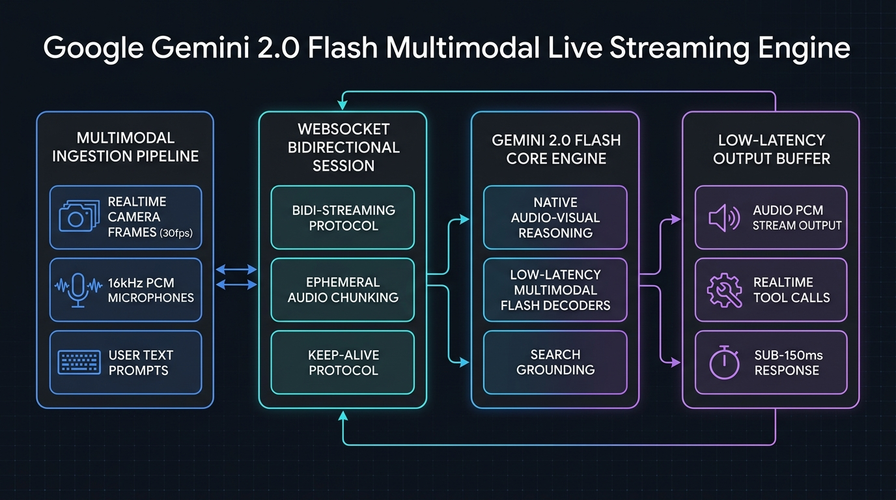

Multimodal Stream Engine
Configure duplex WebSockets, camera frame FPS, native audio codecs, and tool declaration bindings.
Live Telemetry & Session Blueprint
Glass-to-Glass Latency
74.5 ms
Audio Codec
PCM 24kHz
Multimodal Context
1.04M Tokens
Click "Generate Live Stream Session" to assemble the Gemini 2.0 Flash configuration...
Gemini 2.0 Flash Live Multimodal Topology

Overview & Production Capabilities
Google Gemini 2.0 Flash Multimodal Live API provides bidirectional native audio and visual streaming over persistent WebSockets. Unlike turn-based pipelines that stitch together separate STT, LLM, and TTS models, Gemini 2.0 Flash natively ingests PCM audio and video frames directly, delivering sub-100ms interruptions and human-like natural cadence.
Enterprise Production Scenarios
- Industrial Field Maintenance with AR Smart Glasses: Technicians stream live camera video while discussing schematics hands-free with the AI assistant.
- Autonomous Contact Center Voice Agents: Handle complex caller interactions with real-time barge-in, background noise rejection, and live database lookups.
- Real-Time Code & Screen Walkthroughs: Developers share their IDE screens as live video, conversing verbally with the model to diagnose bugs and refactor code.
Infrastructure & Software Technology Stack
Streaming Protocol & Ingress
- Protocol: Full-Duplex WebSockets (BidiGenerateContent API)
- Audio Ingress: Raw PCM 16kHz 16-bit Mono (Little-Endian)
- Audio Egress: Raw PCM 24kHz audio stream with sub-100ms latency
- Video Stream: 1-5 FPS JPEG frames (0.5-2.0 Mbps bandwidth)
Multimodal AI & Grounding
- Foundation Model: Google Gemini 2.0 Flash Multimodal Live
- Live Grounding: Dynamic Google Search with attribution citations
- Tool Calling: Async parallel function calling with JSON schemas
- Barge-In Interruption: Native acoustic interruption handling
Gateway & Edge Infrastructure
- Edge Termination: Cloudflare Workers / Envoy Proxy WebSocket router
- Gateway Runtime: Python 3.11+ / Google GenAI SDK (v0.8+)
- Session State: Ephemeral Redis 7.2 stream session buffer
- Container: Kubernetes 1.30+ Pod with sticky WebSocket ingress